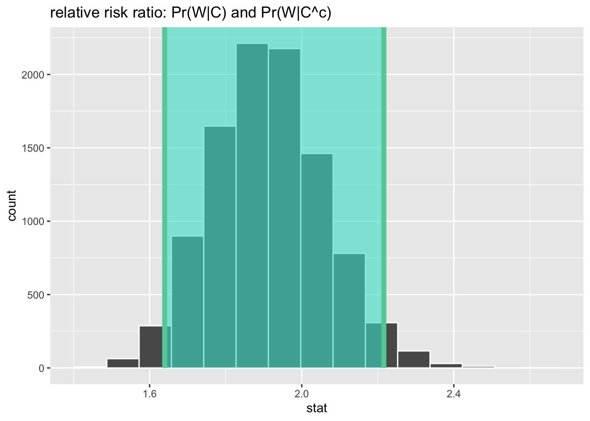
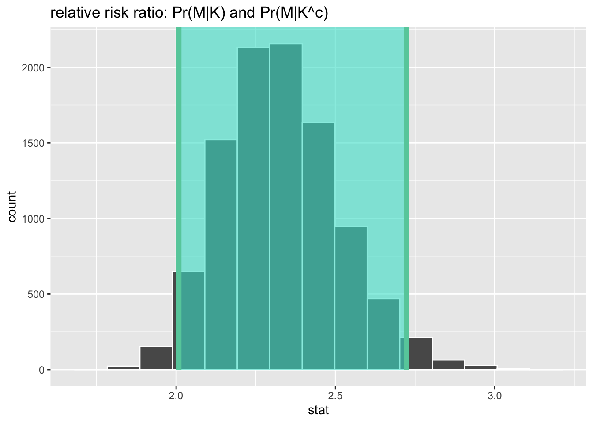

tabyl(d, weekly) weekly n percent
0 1738 0.7776286
1 497 0.2223714total_sample<-nrow(d)
prob_attends_church<-497/total_sample*100
prob_attends_church[1] 22.23714tabyl(d, weekly) weekly n percent
0 1738 0.7776286
1 497 0.2223714total_sample<-nrow(d)
prob_attends_church<-497/total_sample*100
prob_attends_church[1] 22.23714Pr(W) = 22.24%
100-prob_attends_church[1] 77.76286Pr(Wc) = 77.76%
tabyl(d, attends, polview_chr) |>
adorn_percentages(denominator = "row") |>
adorn_pct_formatting(digits = 2) attends Conservative Not Conservative
Not Weekly 28.48% 71.52%
Weekly 48.29% 51.71%Pr(C | W) = 48.29%
tabyl(d, attends, polview_chr) |>
adorn_percentages(denominator = "col") |>
adorn_pct_formatting(digits = 2) attends Conservative Not Conservative
Not Weekly 67.35% 82.87%
Weekly 32.65% 17.13%Pr(W | C) = 32.65%
tabyl(d, attends, polview_chr) |>
adorn_percentages(denominator = "row") |>
adorn_pct_formatting(digits = 2) attends Conservative Not Conservative
Not Weekly 28.48% 71.52%
Weekly 48.29% 51.71%Pr(C | Wc) = 28.48%
tabyl(d, attends, polview_chr) |>
adorn_percentages(denominator = "all") |>
adorn_pct_formatting(digits = 2) attends Conservative Not Conservative
Not Weekly 22.15% 55.62%
Weekly 10.74% 11.50%Pr(W and C) = 10.74%
tabyl(d, attends, polview_chr) |>
adorn_percentages(denominator = "all") |>
adorn_pct_formatting(digits = 2) attends Conservative Not Conservative
Not Weekly 22.15% 55.62%
Weekly 10.74% 11.50%Pr(Wc and Cc ) = 55.62%
chisq<-tabyl(d, attends, polview_chr) |>
chisq.test()
chisq$expected |>
adorn_percentages(denominator = "all") attends Conservative Not Conservative
Not Weekly 0.25573022 0.5218984
Weekly 0.07312884 0.1492425The joint probability of W and C would be 7.31%
Selecting new variables: marital status (M) and whether or not respondent has kids (K)
d2 <- gss18 |>
select(marital, childs) |>
haven::zap_missing() |>
haven::zap_labels() |>
drop_na() |>
mutate(married = if_else(marital == 1, 1L, 0L),
mar_status_chr = if_else(marital == 1, "Married", "Not Married"),
children = if_else(childs >= 1, 1L, 0L),
has_children_chr = if_else(children==1, "Has kids", "No kids")) |>
relocate(married,mar_status_chr,children,has_children_chr)Contingency table:
tabyl(d2, mar_status_chr, has_children_chr) mar_status_chr Has kids No kids
Married 851 145
Not Married 829 518tabyl(d2, mar_status_chr) mar_status_chr n percent
Married 996 0.425096
Not Married 1347 0.574904prob_married<-996/(996+1347)*100
prob_married[1] 42.5096Pr(M) = 42.51%
100-prob_married[1] 57.4904Pr(Mc) = 57.49%
tabyl(d2, mar_status_chr, has_children_chr) |>
adorn_percentages(denominator = "row") |>
adorn_pct_formatting(digits = 2) mar_status_chr Has kids No kids
Married 85.44% 14.56%
Not Married 61.54% 38.46%Pr(K | M) = 85.44%
tabyl(d2, mar_status_chr, has_children_chr) |>
adorn_percentages(denominator = "col") |>
adorn_pct_formatting(digits = 2) mar_status_chr Has kids No kids
Married 50.65% 21.87%
Not Married 49.35% 78.13%Pr(M | K) = 50.65%
tabyl(d2, mar_status_chr, has_children_chr) |>
adorn_percentages(denominator = "row") |>
adorn_pct_formatting(digits = 2) mar_status_chr Has kids No kids
Married 85.44% 14.56%
Not Married 61.54% 38.46%Pr(K | Mc) = 61.54%
tabyl(d2, mar_status_chr, has_children_chr) |>
adorn_percentages(denominator = "all") |>
adorn_pct_formatting(digits = 2) mar_status_chr Has kids No kids
Married 36.32% 6.19%
Not Married 35.38% 22.11%Pr(M and K) = 36.32%
tabyl(d2, mar_status_chr, has_children_chr) |>
adorn_percentages(denominator = "row") |>
adorn_pct_formatting(digits = 2) mar_status_chr Has kids No kids
Married 85.44% 14.56%
Not Married 61.54% 38.46%Pr(Mc and Kc) = 38.46%
chisq<-tabyl(d2, mar_status_chr, has_children_chr) |>
chisq.test()
chisq$expected |>
adorn_percentages(denominator = "all") mar_status_chr Has kids No kids
Married 0.3048064 0.1202897
Not Married 0.4122231 0.1626809The joint probability of M and K would be 30.48%
Compare Pr(W|C) and Pr(W|Cc) using the following summary statistics:
tabyl(d, attends, polview_chr) |>
adorn_percentages(denominator = "col") |>
adorn_pct_formatting(digits = 2) attends Conservative Not Conservative
Not Weekly 67.35% 82.87%
Weekly 32.65% 17.13%prob_weekly_given_conservative<-.3265
prob_weekly_given_not_conservative<-.1713
prob_weekly_given_conservative-prob_weekly_given_not_conservative[1] 0.1552There is a 15.52% point difference in probabilities between the two groups: probability of going to services weekly among those who are conservative AND probability of going to services weekly among those who are not conservative.
prob_weekly_given_conservative/prob_weekly_given_not_conservative[1] 1.906013People who are conservative have a probability of attending religious services weekly about 1.9X greater than those who are not conservative.
tabyl(d, attends, polview_chr) attends Conservative Not Conservative
Not Weekly 495 1243
Weekly 240 257# odds that person who is conservative attends weekly services
odds_weekly_conservative<-240/495
# odds that a person who is NOT conservative attends weekly services
odds_weekly_not_conservative<-257/1243
odds_ratio<-odds_weekly_conservative/odds_weekly_not_conservative
odds_ratio[1] 2.345006Conservatives’ odds of attending weekly religious services are 2.3X greater than those who are not conservative
log(odds_ratio)[1] 0.8522882When compared to non-conservative, the log-odds ratio of conservatives attending weekly religious services is about 0.85
d <- gss18 |>
select(attend, polviews) |>
haven::zap_missing() |>
haven::zap_labels() |>
drop_na()
d <- d |>
mutate(weekly = if_else(attend >= 7, 1L, 0L),
conservative = if_else(polviews >= 5, 1L, 0L)) |>
drop_na()
boot_rr <- d |>
mutate(conservative_cat = if_else(conservative == 1L, "conservative", "other")) |>
mutate(weekly_cat = if_else(weekly == 1L, "weekly", "not_weekly")) |>
specify(weekly_cat ~ conservative_cat, success="weekly") |>
generate(reps = 1e4, type = "bootstrap") |>
calculate(stat = "ratio of props", order = c("conservative", "other"))
ci_rr <- get_confidence_interval(boot_rr)Using `level = 0.95` to compute confidence interval.boot_rr |>
visualize() +
shade_ci(ci_rr)+
ggtitle("relative risk ratio: Pr(W|C) and Pr(W|C^c)")
boot_or <- d |>
mutate(conservative_cat = if_else(conservative == 1L, "conservative", "other")) |>
mutate(weekly_cat = if_else(weekly == 1L, "weekly", "not_weekly")) |>
specify(weekly_cat ~ conservative_cat, success="weekly") |>
generate(reps = 1e4, type = "bootstrap") |>
calculate(stat = "odds ratio", order = c("conservative", "other"))
ci_or <- get_confidence_interval(boot_or)Using `level = 0.95` to compute confidence interval.boot_or |>
visualize() +
shade_ci(ci_or)+
ggtitle("odds ratio: Pr(W|C) and Pr(W|C^c)")Compare Pr(M|K) and Pr(M|Kc) using the following summary statistics:
tabyl(d2, mar_status_chr, has_children_chr) |>
adorn_percentages(denominator = "col") |>
adorn_pct_formatting(digits = 2) mar_status_chr Has kids No kids
Married 50.65% 21.87%
Not Married 49.35% 78.13%prob_married_given_kids<-.5065
prob_married_given_no_kids<-.2187
prob_married_given_kids-prob_married_given_no_kids[1] 0.2878There is a 28.78% point difference in probabilities between the two groups: probability of being married among those who have kids and probability of being married among those who do NOT have kids.
prob_married_given_kids/prob_married_given_no_kids[1] 2.315958People who have kids have a probability of being married about 2.32X greater than those who do not have kids.
tabyl(d2, mar_status_chr, has_children_chr) mar_status_chr Has kids No kids
Married 851 145
Not Married 829 518# odds that person who has kids is married
odds_married_yes_kids<-851/829
# odds that a person who does NOT have kids is married
odds_married_no_kids<-145/518
odds_ratio_married_kids<-odds_married_yes_kids/odds_married_no_kids
odds_ratio_married_kids[1] 3.667219Respondents with kids’ odds of being married is about 3.67X greater than those who do not have kids.
log(odds_ratio_married_kids)[1] 1.299433When compared to respondents without kids, the log-odds ratio of respondents with kids being married is about 1.30.
boot_rr_d2 <- d2 |>
specify(mar_status_chr ~ has_children_chr, success="Married") |>
generate(reps = 1e4, type = "bootstrap") |>
calculate(stat = "ratio of props", order = c("Has kids", "No kids"))
ci_rr_d2 <- get_confidence_interval(boot_rr_d2)Using `level = 0.95` to compute confidence interval.boot_rr_d2 |>
visualize() +
shade_ci(ci_rr_d2)+
ggtitle("relative risk ratio: Pr(M|K) and Pr(M|K^c)")
boot_or_d2 <- d2 |>
specify(mar_status_chr ~ has_children_chr, success="Married") |>
generate(reps = 1e4, type = "bootstrap") |>
calculate(stat = "odds ratio", order = c("Has kids", "No kids"))
ci_or_d2 <- get_confidence_interval(boot_or_d2)Using `level = 0.95` to compute confidence interval.boot_or_d2 |>
visualize() +
shade_ci(ci_or_d2)+
ggtitle("odds ratio: Pr(M|K) and Pr(M|K^c)")